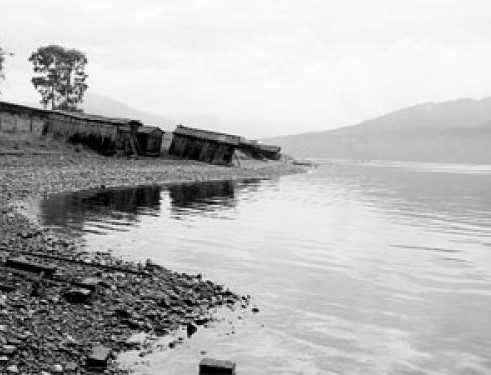

Деревня «Пашки»
Пашки — упразднённое село в Иркутском районе Иркутской области России. Входило в состав Большеразводнинского сельского совета. Затоплено при строительстве Иркутского водохранилища. Деревня стояла на реке Ангара, при впадении притока Бурдугуз.
Образована в 1807 году. Входила в состав Смоленской волости Иркутского уезда Иркутской губернии. В 1909 г. в деревне насчитывалось 19 дворов с населением в 76 человек, из них мужского пола – 42, женского – 34 человека. В школе обучалось детей – 2 человека.
Ближайшая церковь, к которой была приписана д. Пашки – Казанская, находящаяся в д. Тальцы.
В 1929 г. д.
Пашки входила в состав Большеразводнинского сельсовета Иркутского района Иркутского округа
Сибирского края. На этот период она насчитывала 27 дворовс населением в 118 человек, из них мужского пола – 61 и женского – 57.
В 1938 г. село Пашки, как центр сельсовета входило в состав Иркутского района Иркутской области.
В начале 1950-х гг. при строительстве Иркутской
ГЭС село Пашки попало в зону затопления; жители были переселены.
...в 1936 году, когда в 35 километрах от Иркутска в селе Пашки была открыта колония для пациентов, страдающих
хроническими душевными недугами, филиал Иркутской психиатрической больницы...(Источник:
https://www.ogirk.ru/turizm/)
Архивные материалы

«Там, где плещется Ангара раньше жили люди»
Дополнительная информация:
Почтовый индекс: 665006.
Телефонный код: +7 3952.
Координаты: 52°05′00″ с. ш. 104°34′00″ в. д.
Деревня «Пашки» на карте России
*Если у вас имеется какая-либо информация и/или фото-/видеоматериалы, касающиеся деревни, описанной на сайте, то свяжитесь с нами через раздел «Контактая информация»